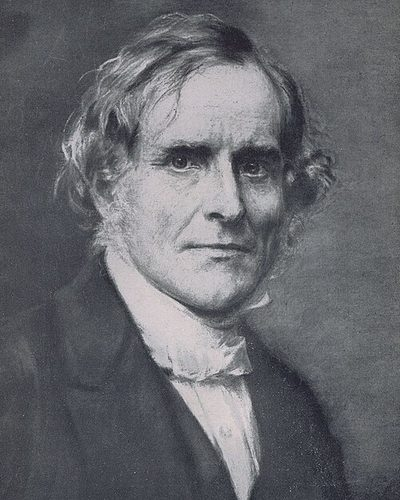

Ideologies / Left
What is Christian Socialism?
Christian Socialism is a political ideology in the Left family. Founded in England after the failure of Chartism in 1848. Maurice argued that people are already members of one family under God, so competition is not a law of nature but a denial of the true order of society. The practical remedy was associations of working men who own their workshops and share the proceeds, together with education for workers. He wanted to make socialists Christian and Christians socialist, and he distrusted both political agitation and class conflict.
Cooperation, not competition, as the Christian law of social life.
Defined from: F. D. Maurice, with John Ludlow and Charles Kingsley, Tracts on Christian Socialism (1850)
See how close you are to Christian Socialism Dare a friend to answer as one


Where Christian Socialism stands on 13 axes
Each axis runs from 0 to 100. A score of 50 is the middle. On a classic compass it sits in the Libertarian Left quadrant.
| Axis | Position | Score | In words |
|---|---|---|---|
| EconomyMarket to Planned | 50 | Balanced | |
| OwnershipPrivate to Collective | 65 | Leans Collective | |
| RightsLiberty to Security | 40 | Leans Liberty | |
| GovernmentDemocracy to Autocracy | 35 | Leans Democracy | |
| StructureDecentralised to Centralised | 30 | Strongly Decentralised | |
| NationInternationalist to Nationalist | 40 | Leans Internationalist | |
| ImmigrationMulticulturalist to Assimilationist | 45 | Balanced | |
| ValuesProgressive to Traditional | 65 | Leans Traditional | |
| TechnologyAccelerationist to Precautionary | 50 | Balanced | |
| EnvironmentIndustrialist to Environmentalist | 50 | Balanced | |
| ReligionSecular to Religious | 90 | Very strongly Religious | |
| MilitaryPacifist to Militarist | 15 | Very strongly Pacifist | |
| TradeFree Trade to Protectionist | 45 | Balanced |
Ideologies closest to Christian Socialism
- Social Gospel86% alike
- Islamic Democracy85% alike
- Christian Democracy84% alike
- Red Toryism83% alike
- Engaged Buddhism83% alike
Its opposite on this map is Juche, at 31%.
Parties near Christian Socialism
- Italian People's PartyItaly. Appeal to the Free and Strong (1919)84% alike
- American Solidarity PartyUnited States. Platform and Principles (2024)84% alike
- SolidarityPoland. The Self Governing Republic (1981)83% alike
- Centre PartyGermany. The Soest Programme (1870)81% alike
Common questions
What is Christian Socialism?
Christian Socialism is a political ideology in the Left family. Founded in England after the failure of Chartism in 1848. Maurice argued that people are already members of one family under God, so competition is not a law of nature but a denial of the true order of society. The practical remedy was associations of working men who own their workshops and share the proceeds, together with education for workers. He wanted to make socialists Christian and Christians socialist, and he distrusted both political agitation and class conflict.
What does Christian Socialism believe?
In one line: Cooperation, not competition, as the Christian law of social life. Its strongest positions are Religious, Pacifist, Decentralised. Founded in England after the failure of Chartism in 1848. Maurice argued that people are already members of one family under God, so competition is not a law of nature but a denial of the true order of society. The practical remedy was associations of working men who own their workshops and share the proceeds, together with education for workers. He wanted to make socialists Christian and Christians socialist, and he distrusted both political agitation and class conflict.
Who founded Christian Socialism?
Christian Socialism is defined here from Tracts on Christian Socialism (1850) by F. D. Maurice, with John Ludlow and Charles Kingsley. The thinker most tied to it is F. D. Maurice (1805 to 1872).
Is Christian Socialism left wing or right wing?
On a classic two axis compass Christian Socialism falls in the Libertarian Left quadrant, which means the economic centre and the libertarian side. Left and right hide a lot, though, which is why EthosScales scores it on thirteen separate axes.
How is Christian Socialism different from Social Gospel?
They are close: 86% alike. The biggest gaps are on Government, where Christian Socialism scores 35 and Social Gospel scores 10, and Structure, where Christian Socialism scores 30 and Social Gospel scores 45. On each axis, 0 is one end and 100 is the other.
Think this is wrong? Suggest a correction. The scores are editorial estimates.